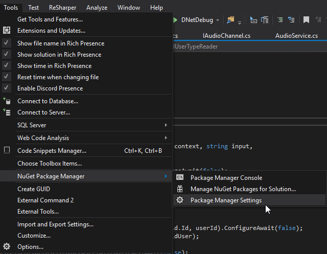
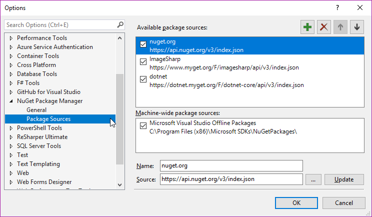
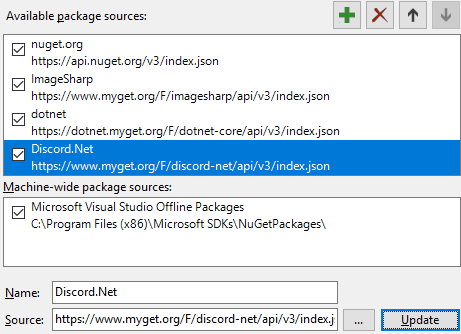
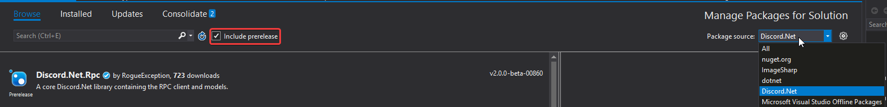
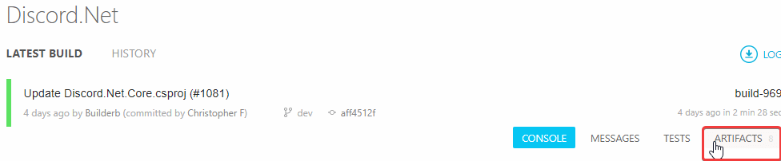
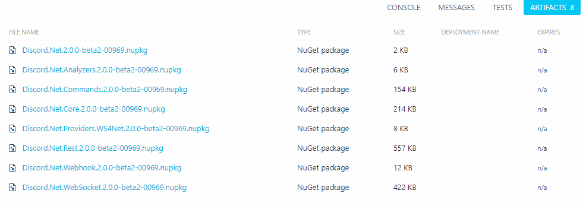

Installing Discord.Net Nightly Build
Before Discord.Net pushes a new set of features into the stable version, we use nightly builds to test the features with the community for an extensive period of time. Each nightly build is compiled by AppVeyor whenever a new commit is made and will be pushed to our MyGet feed.
Important
Although nightlies are generally stable and have more features and bug fixes than the current stable build on NuGet, there will be breaking changes during the development or breaking bugs; these bugs are usually fixed as soon as they are discovered, but you should still be aware of that.
Installing with MyGet (Recommended)
MyGet is typically used by many development teams to publish their latest pre-release packages before the features are finalized and pushed to NuGet.
The following is the feed link of Discord.Net,
https://www.myget.org/F/discord-net/api/v3/index.json
Depending on which IDE you use, there are many different ways of adding the feed to your package source.
Go to
Tools>NuGet Package Manager>Package Manager Settings
Go to
Package Sources
Click on the add icon
Fill in the desired name and source as shown below and hit
Update
Note
Remember to tick the Include pre-release checkbox to see the
nightly builds!

Installing from AppVeyor Artifacts
As mentioned in the first paragraph, we utilize AppVeyor to perform automated tests and publish the new build. During the publishing process, we also upload the NuGet packages onto AppVeyor's Artifact collection.
The latest build status can be found within our AppVeyor project.
- In the project, you may find our latest build including the aforementioned artifacts. 
- In the artifacts collection, you should see the latest packages
packed in
*.nupkgform which you could download from and use. 
This page was last modified at 7/30/2019 7:23:25 PM +00:00 (UTC).